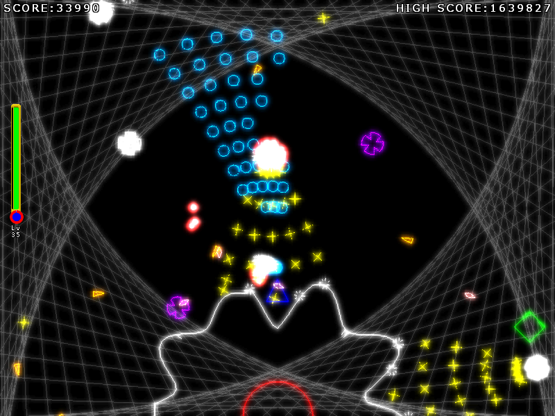

線だけでできた世界。
そこにあるまるい惑星上で自機を操作して弾を発射し、攻めてくる敵を倒すシューティングゲーム。
惑星を守りきるのが目的。
タイトル画面

プレイ画面

動作条件
OS
WindowsVista以降のWindows
物理メモリ
100MB以上の空きが有ること
その他
DirectX9以上のインストール。シェーダーモデル2.0以上に対応しているグラフィックスデバイスの搭載を推奨
テスト環境
Windows10Pro v1511 64bit(物理メモリ16GB)
Windows8.1Pro 64bit(物理メモリ4GB)
その他情報
画面サイズ
800*600
フレームレート
60FPS固定
最新バージョン
V1.1.1 2016/5/1更新
素材提供
音楽全般
(C)PANICPUMPKIN様
効果音
On-Jin ～音人～様
効果音ラボ様
小森平様
フリー効果音素材 くらげ工匠様
音楽素材/魔王魂様
フォント
フォントAC様